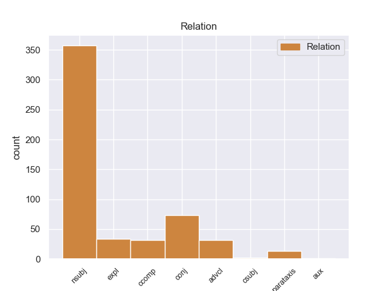
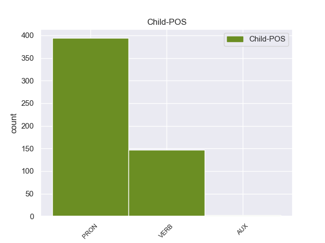

Distribution of features within this leaf



Agreement Rules sorted by frequency.
- When the dependent token is the nominal subject(nsubj) of the head token, and the head token is VERB
1 Unless _ _ _ _ 0 _ _ _
2 you _ _ _ _ 0 _ _ _
3 want _ _ _ _ 0 _ _ _
4 to _ _ _ _ 0 _ _ _
5 take _ _ _ _ 0 _ _ _
6 the _ _ _ _ 0 _ _ _
7 " _ _ _ _ 0 _ _ _
8 tell _ _ _ _ 0 _ _ _
9 the _ _ _ _ 0 _ _ _
10 customer _ _ _ _ 0 _ _ _
11 how _ _ _ _ 0 _ _ _
12 wrong _ _ _ _ 0 _ _ _
13 she she PRON PRP Case=Nom|Gender=Fem|Number=Sing|Person=3|PronType=Prs 14 nsubj 14:nsubj _
14 is be VERB VBZ Mood=Ind|Number=Sing|Person=3|Tense=Pres|VerbForm=Fin 0 _ _ _
15 and _ _ _ _ 0 _ _ _
16 try _ _ _ _ 0 _ _ _
17 and _ _ _ _ 0 _ _ _
18 force _ _ _ _ 0 _ _ _
19 her _ _ _ _ 0 _ _ _
20 into _ _ _ _ 0 _ _ _
21 a _ _ _ _ 0 _ _ _
22 dress _ _ _ _ 0 _ _ _
23 she _ _ _ _ 0 _ _ _
24 's _ _ _ _ 0 _ _ _
25 obviously _ _ _ _ 0 _ _ _
26 not _ _ _ _ 0 _ _ _
27 loving _ _ _ _ 0 _ _ _
28 " _ _ _ _ 0 _ _ _
29 approach _ _ _ _ 0 _ _ _
30 which _ _ _ _ 0 _ _ _
31 will _ _ _ _ 0 _ _ _
32 likely _ _ _ _ 0 _ _ _
33 get _ _ _ _ 0 _ _ _
34 you _ _ _ _ 0 _ _ _
35 ... _ _ _ _ 0 _ _ _
36 uh _ _ _ _ 0 _ _ _
37 ... _ _ _ _ 0 _ _ _
38 nowhere _ _ _ _ 0 _ _ _
39 . _ _ _ _ 0 _ _ _
1 If _ _ _ _ 0 _ _ _
2 you _ _ _ _ 0 _ _ _
3 want _ _ _ _ 0 _ _ _
4 a _ _ _ _ 0 _ _ _
5 doctor _ _ _ _ 0 _ _ _
6 who _ _ _ _ 0 _ _ _
7 will _ _ _ _ 0 _ _ _
8 lie _ _ _ _ 0 _ _ _
9 to _ _ _ _ 0 _ _ _
10 you _ _ _ _ 0 _ _ _
11 and _ _ _ _ 0 _ _ _
12 say _ _ _ _ 0 _ _ _
13 he _ _ _ _ 0 _ _ _
14 will _ _ _ _ 0 _ _ _
15 operate _ _ _ _ 0 _ _ _
16 and _ _ _ _ 0 _ _ _
17 then _ _ _ _ 0 _ _ _
18 change _ _ _ _ 0 _ _ _
19 his _ _ _ _ 0 _ _ _
20 mind _ _ _ _ 0 _ _ _
21 , _ _ _ _ 0 _ _ _
22 and _ _ _ _ 0 _ _ _
23 not _ _ _ _ 0 _ _ _
24 know _ _ _ _ 0 _ _ _
25 what _ _ _ _ 0 _ _ _
26 he _ _ _ _ 0 _ _ _
27 is _ _ _ _ 0 _ _ _
28 talking _ _ _ _ 0 _ _ _
29 about _ _ _ _ 0 _ _ _
30 when _ _ _ _ 0 _ _ _
31 he _ _ _ _ 0 _ _ _
32 recommends recommend VERB VBZ Mood=Ind|Number=Sing|Person=3|Tense=Pres|VerbForm=Fin 0 _ _ _
33 procedures _ _ _ _ 0 _ _ _
34 at _ _ _ _ 0 _ _ _
35 other _ _ _ _ 0 _ _ _
36 hospitals _ _ _ _ 0 _ _ _
37 and _ _ _ _ 0 _ _ _
38 says say VERB VBZ Mood=Ind|Number=Sing|Person=3|Tense=Pres|VerbForm=Fin 32 conj 28:advcl:when|32:conj:and _
39 they _ _ _ _ 0 _ _ _
40 are _ _ _ _ 0 _ _ _
41 what _ _ _ _ 0 _ _ _
42 you _ _ _ _ 0 _ _ _
43 need _ _ _ _ 0 _ _ _
44 , _ _ _ _ 0 _ _ _
45 when _ _ _ _ 0 _ _ _
46 they _ _ _ _ 0 _ _ _
47 will _ _ _ _ 0 _ _ _
48 not _ _ _ _ 0 _ _ _
49 work _ _ _ _ 0 _ _ _
50 for _ _ _ _ 0 _ _ _
51 you _ _ _ _ 0 _ _ _
52 , _ _ _ _ 0 _ _ _
53 go _ _ _ _ 0 _ _ _
54 to _ _ _ _ 0 _ _ _
55 this _ _ _ _ 0 _ _ _
56 doctor _ _ _ _ 0 _ _ _
57 ... _ _ _ _ 0 _ _ _
58 he _ _ _ _ 0 _ _ _
59 is _ _ _ _ 0 _ _ _
60 the _ _ _ _ 0 _ _ _
61 one _ _ _ _ 0 _ _ _
62 for _ _ _ _ 0 _ _ _
63 you _ _ _ _ 0 _ _ _
64 . _ _ _ _ 0 _ _ _
1 Anyhow _ _ _ _ 0 _ _ _
2 , _ _ _ _ 0 _ _ _
3 after _ _ _ _ 0 _ _ _
4 reading _ _ _ _ 0 _ _ _
5 some _ _ _ _ 0 _ _ _
6 of _ _ _ _ 0 _ _ _
7 the _ _ _ _ 0 _ _ _
8 other _ _ _ _ 0 _ _ _
9 reviews _ _ _ _ 0 _ _ _
10 it it PRON PRP Case=Nom|Gender=Neut|Number=Sing|Person=3|PronType=Prs 11 expl 11:expl _
11 seems seem VERB VBZ Mood=Ind|Number=Sing|Person=3|Tense=Pres|VerbForm=Fin 0 _ _ _
12 like _ _ _ _ 0 _ _ _
13 some _ _ _ _ 0 _ _ _
14 of _ _ _ _ 0 _ _ _
15 the _ _ _ _ 0 _ _ _
16 other _ _ _ _ 0 _ _ _
17 reviewers _ _ _ _ 0 _ _ _
18 are _ _ _ _ 0 _ _ _
19 expecting _ _ _ _ 0 _ _ _
20 mircles _ _ _ _ 0 _ _ _
21 . _ _ _ _ 0 _ _ _
1 The _ _ _ _ 0 _ _ _
2 first _ _ _ _ 0 _ _ _
3 thing _ _ _ _ 0 _ _ _
4 you _ _ _ _ 0 _ _ _
5 notice _ _ _ _ 0 _ _ _
6 when _ _ _ _ 0 _ _ _
7 you _ _ _ _ 0 _ _ _
8 arrive _ _ _ _ 0 _ _ _
9 on _ _ _ _ 0 _ _ _
10 location _ _ _ _ 0 _ _ _
11 is be VERB VBZ Mood=Ind|Number=Sing|Person=3|Tense=Pres|VerbForm=Fin 0 _ _ _
12 that _ _ _ _ 0 _ _ _
13 the _ _ _ _ 0 _ _ _
14 waiting _ _ _ _ 0 _ _ _
15 line _ _ _ _ 0 _ _ _
16 literally _ _ _ _ 0 _ _ _
17 goes go VERB VBZ Mood=Ind|Number=Sing|Person=3|Tense=Pres|VerbForm=Fin 11 ccomp 11:ccomp _
18 out _ _ _ _ 0 _ _ _
19 the _ _ _ _ 0 _ _ _
20 door _ _ _ _ 0 _ _ _
21 and _ _ _ _ 0 _ _ _
22 spills _ _ _ _ 0 _ _ _
23 into _ _ _ _ 0 _ _ _
24 the _ _ _ _ 0 _ _ _
25 parking _ _ _ _ 0 _ _ _
26 lot _ _ _ _ 0 _ _ _
27 . _ _ _ _ 0 _ _ _
1 I _ _ _ _ 0 _ _ _
2 mean _ _ _ _ 0 _ _ _
3 , _ _ _ _ 0 _ _ _
4 I _ _ _ _ 0 _ _ _
5 do _ _ _ _ 0 _ _ _
6 n't _ _ _ _ 0 _ _ _
7 care _ _ _ _ 0 _ _ _
8 if _ _ _ _ 0 _ _ _
9 he _ _ _ _ 0 _ _ _
10 does _ _ _ _ 0 _ _ _
11 n't _ _ _ _ 0 _ _ _
12 know _ _ _ _ 0 _ _ _
13 , _ _ _ _ 0 _ _ _
14 but _ _ _ _ 0 _ _ _
15 if _ _ _ _ 0 _ _ _
16 he _ _ _ _ 0 _ _ _
17 pretends pretend VERB VBZ Mood=Ind|Number=Sing|Person=3|Tense=Pres|VerbForm=Fin 29 advcl 29:advcl:if _
18 to _ _ _ _ 0 _ _ _
19 know _ _ _ _ 0 _ _ _
20 and _ _ _ _ 0 _ _ _
21 tells _ _ _ _ 0 _ _ _
22 me _ _ _ _ 0 _ _ _
23 BS _ _ _ _ 0 _ _ _
24 to _ _ _ _ 0 _ _ _
25 my _ _ _ _ 0 _ _ _
26 face _ _ _ _ 0 _ _ _
27 , _ _ _ _ 0 _ _ _
28 there _ _ _ _ 0 _ _ _
29 's be VERB VBZ Mood=Ind|Number=Sing|Person=3|Tense=Pres|VerbForm=Fin 0 _ _ _
30 no _ _ _ _ 0 _ _ _
31 way _ _ _ _ 0 _ _ _
32 I _ _ _ _ 0 _ _ _
33 'm _ _ _ _ 0 _ _ _
34 going _ _ _ _ 0 _ _ _
35 to _ _ _ _ 0 _ _ _
36 trust _ _ _ _ 0 _ _ _
37 him _ _ _ _ 0 _ _ _
38 when _ _ _ _ 0 _ _ _
39 matters _ _ _ _ 0 _ _ _
40 turn _ _ _ _ 0 _ _ _
41 to _ _ _ _ 0 _ _ _
42 the _ _ _ _ 0 _ _ _
43 price _ _ _ _ 0 _ _ _
44 of _ _ _ _ 0 _ _ _
45 the _ _ _ _ 0 _ _ _
46 car _ _ _ _ 0 _ _ _
47 and _ _ _ _ 0 _ _ _
48 financing _ _ _ _ 0 _ _ _
49 . _ _ _ _ 0 _ _ _
1 He _ _ _ _ 0 _ _ _
2 gives give VERB VBZ Mood=Ind|Number=Sing|Person=3|Tense=Pres|VerbForm=Fin 0 _ _ _
3 the _ _ _ _ 0 _ _ _
4 phone _ _ _ _ 0 _ _ _
5 to _ _ _ _ 0 _ _ _
6 a _ _ _ _ 0 _ _ _
7 girl _ _ _ _ 0 _ _ _
8 , _ _ _ _ 0 _ _ _
9 she _ _ _ _ 0 _ _ _
10 says _ _ _ _ 0 _ _ _
11 , _ _ _ _ 0 _ _ _
12 I _ _ _ _ 0 _ _ _
13 have _ _ _ _ 0 _ _ _
14 to _ _ _ _ 0 _ _ _
15 have _ _ _ _ 0 _ _ _
16 your _ _ _ _ 0 _ _ _
17 address _ _ _ _ 0 _ _ _
18 , _ _ _ _ 0 _ _ _
19 I _ _ _ _ 0 _ _ _
20 say _ _ _ _ 0 _ _ _
21 , _ _ _ _ 0 _ _ _
22 do _ _ _ _ 0 _ _ _
23 you _ _ _ _ 0 _ _ _
24 deliver _ _ _ _ 0 _ _ _
25 to _ _ _ _ 0 _ _ _
26 17th _ _ _ _ 0 _ _ _
27 and _ _ _ _ 0 _ _ _
28 locust _ _ _ _ 0 _ _ _
29 , _ _ _ _ 0 _ _ _
30 she _ _ _ _ 0 _ _ _
31 says _ _ _ _ 0 _ _ _
32 , _ _ _ _ 0 _ _ _
33 your _ _ _ _ 0 _ _ _
34 exact _ _ _ _ 0 _ _ _
35 address _ _ _ _ 0 _ _ _
36 , _ _ _ _ 0 _ _ _
37 I _ _ _ _ 0 _ _ _
38 say _ _ _ _ 0 _ _ _
39 1 _ _ _ _ 0 _ _ _
40 - _ _ _ _ 0 _ _ _
41 7 _ _ _ _ 0 _ _ _
42 - _ _ _ _ 0 _ _ _
43 0 _ _ _ _ 0 _ _ _
44 - _ _ _ _ 0 _ _ _
45 1 _ _ _ _ 0 _ _ _
46 Locust _ _ _ _ 0 _ _ _
47 , _ _ _ _ 0 _ _ _
48 ARe _ _ _ _ 0 _ _ _
49 you _ _ _ _ 0 _ _ _
50 sure _ _ _ _ 0 _ _ _
51 ? _ _ _ _ 0 _ _ _
52 she _ _ _ _ 0 _ _ _
53 asks ask VERB VBZ Mood=Ind|Number=Sing|Person=3|Tense=Pres|VerbForm=Fin 2 parataxis 2:parataxis SpaceAfter=No
54 ? _ _ _ _ 0 _ _ _
1 I _ _ _ _ 0 _ _ _
2 received _ _ _ _ 0 _ _ _
3 a _ _ _ _ 0 _ _ _
4 report _ _ _ _ 0 _ _ _
5 from _ _ _ _ 0 _ _ _
6 HR _ _ _ _ 0 _ _ _
7 and _ _ _ _ 0 _ _ _
8 it _ _ _ _ 0 _ _ _
9 appears appear VERB VBZ Mood=Ind|Number=Sing|Person=3|Tense=Pres|VerbForm=Fin 0 _ _ _
10 there _ _ _ _ 0 _ _ _
11 is be VERB VBZ Mood=Ind|Number=Sing|Person=3|Tense=Pres|VerbForm=Fin 9 csubj 9:csubj _
12 conflicting _ _ _ _ 0 _ _ _
13 information _ _ _ _ 0 _ _ _
14 regarding _ _ _ _ 0 _ _ _
15 some _ _ _ _ 0 _ _ _
16 of _ _ _ _ 0 _ _ _
17 the _ _ _ _ 0 _ _ _
18 titles _ _ _ _ 0 _ _ _
19 for _ _ _ _ 0 _ _ _
20 various _ _ _ _ 0 _ _ _
21 employees _ _ _ _ 0 _ _ _
22 . _ _ _ _ 0 _ _ _
1 The _ _ _ _ 0 _ _ _
2 motel _ _ _ _ 0 _ _ _
3 is _ _ _ _ 0 _ _ _
4 very _ _ _ _ 0 _ _ _
5 well _ _ _ _ 0 _ _ _
6 maintained _ _ _ _ 0 _ _ _
7 , _ _ _ _ 0 _ _ _
8 and _ _ _ _ 0 _ _ _
9 the _ _ _ _ 0 _ _ _
10 managers _ _ _ _ 0 _ _ _
11 are _ _ _ _ 0 _ _ _
12 so _ _ _ _ 0 _ _ _
13 accomodating _ _ _ _ 0 _ _ _
14 , _ _ _ _ 0 _ _ _
15 it it PRON PRP Case=Nom|Gender=Neut|Number=Sing|Person=3|PronType=Prs 16 nsubj 16:nsubj SpaceAfter=No
16 's be AUX VBZ Mood=Ind|Number=Sing|Person=3|Tense=Pres|VerbForm=Fin 0 _ _ _
17 kind _ _ _ _ 0 _ _ _
18 of _ _ _ _ 0 _ _ _
19 like _ _ _ _ 0 _ _ _
20 visiting _ _ _ _ 0 _ _ _
21 family _ _ _ _ 0 _ _ _
22 each _ _ _ _ 0 _ _ _
23 year _ _ _ _ 0 _ _ _
24 ! _ _ _ _ 0 _ _ _
25 ;-) _ _ _ _ 0 _ _ _
1 Accordingly _ _ _ _ 0 _ _ _
2 , _ _ _ _ 0 _ _ _
3 the _ _ _ _ 0 _ _ _
4 only _ _ _ _ 0 _ _ _
5 issue _ _ _ _ 0 _ _ _
6 left _ _ _ _ 0 _ _ _
7 for _ _ _ _ 0 _ _ _
8 arbitration _ _ _ _ 0 _ _ _
9 is _ _ _ _ 0 _ _ _
10 whether _ _ _ _ 0 _ _ _
11 our _ _ _ _ 0 _ _ _
12 IP _ _ _ _ 0 _ _ _
13 ( _ _ _ _ 0 _ _ _
14 the _ _ _ _ 0 _ _ _
15 only _ _ _ _ 0 _ _ _
16 one _ _ _ _ 0 _ _ _
17 and _ _ _ _ 0 _ _ _
18 therefore _ _ _ _ 0 _ _ _
19 the _ _ _ _ 0 _ _ _
20 one _ _ _ _ 0 _ _ _
21 they _ _ _ _ 0 _ _ _
22 have _ _ _ _ 0 _ _ _
23 to _ _ _ _ 0 _ _ _
24 choose _ _ _ _ 0 _ _ _
25 ) _ _ _ _ 0 _ _ _
26 is be AUX VBZ Mood=Ind|Number=Sing|Person=3|Tense=Pres|VerbForm=Fin 0 _ _ _
27 or _ _ _ _ 0 _ _ _
28 is be AUX VBZ Mood=Ind|Number=Sing|Person=3|Tense=Pres|VerbForm=Fin 26 conj 26:conj:or _
29 not _ _ _ _ 0 _ _ _
30 an _ _ _ _ 0 _ _ _
31 economic _ _ _ _ 0 _ _ _
32 hardship _ _ _ _ 0 _ _ _
33 under _ _ _ _ 0 _ _ _
34 the _ _ _ _ 0 _ _ _
35 contract _ _ _ _ 0 _ _ _
36 . _ _ _ _ 0 _ _ _
1 hi _ _ _ _ 0 _ _ _
2 everyone _ _ _ _ 0 _ _ _
3 .... _ _ _ _ 0 _ _ _
4 just _ _ _ _ 0 _ _ _
5 hav _ _ _ _ 0 _ _ _
6 my _ _ _ _ 0 _ _ _
7 hands _ _ _ _ 0 _ _ _
8 on _ _ _ _ 0 _ _ _
9 my _ _ _ _ 0 _ _ _
10 new _ _ _ _ 0 _ _ _
11 OLYMPUS _ _ _ _ 0 _ _ _
12 X940 _ _ _ _ 0 _ _ _
13 digital _ _ _ _ 0 _ _ _
14 camera _ _ _ _ 0 _ _ _
15 .. _ _ _ _ 0 _ _ _
16 wel _ _ _ _ 0 _ _ _
17 , _ _ _ _ 0 _ _ _
18 i _ _ _ _ 0 _ _ _
19 always _ _ _ _ 0 _ _ _
20 wanted _ _ _ _ 0 _ _ _
21 2 _ _ _ _ 0 _ _ _
22 hav _ _ _ _ 0 _ _ _
23 one _ _ _ _ 0 _ _ _
24 by _ _ _ _ 0 _ _ _
25 sony _ _ _ _ 0 _ _ _
26 .. _ _ _ _ 0 _ _ _
27 but _ _ _ _ 0 _ _ _
28 anyways _ _ _ _ 0 _ _ _
29 , _ _ _ _ 0 _ _ _
30 ended _ _ _ _ 0 _ _ _
31 up _ _ _ _ 0 _ _ _
32 having _ _ _ _ 0 _ _ _
33 olympus _ _ _ _ 0 _ _ _
34 X940 _ _ _ _ 0 _ _ _
35 from _ _ _ _ 0 _ _ _
36 my _ _ _ _ 0 _ _ _
37 dad _ _ _ _ 0 _ _ _
38 ....... _ _ _ _ 0 _ _ _
39 does do AUX VBZ Mood=Ind|Number=Sing|Person=3|Tense=Pres|VerbForm=Fin 42 aux 42:aux _
40 any1 _ _ _ _ 0 _ _ _
41 already _ _ _ _ 0 _ _ _
42 has have VERB VBZ Mood=Ind|Number=Sing|Person=3|Tense=Pres|VerbForm=Fin 0 _ _ _
43 it _ _ _ _ 0 _ _ _
44 ? _ _ _ _ 0 _ _ _
Disagree Examples:
1 I I PRON PRP Case=Nom|Number=Sing|Person=1|PronType=Prs 3 nsubj 3:nsubj _
2 mostly _ _ _ _ 0 _ _ _
3 deals deal VERB VBZ Mood=Ind|Number=Sing|Person=3|Tense=Pres|VerbForm=Fin 0 _ _ _
4 with _ _ _ _ 0 _ _ _
5 dating _ _ _ _ 0 _ _ _
6 advice _ _ _ _ 0 _ _ _
1 Saturday _ _ _ _ 0 _ _ _
2 probably _ _ _ _ 0 _ _ _
3 works work VERB VBZ Mood=Ind|Number=Sing|Person=3|Tense=Pres|VerbForm=Fin 0 _ _ _
4 better _ _ _ _ 0 _ _ _
5 for _ _ _ _ 0 _ _ _
6 me _ _ _ _ 0 _ _ _
7 , _ _ _ _ 0 _ _ _
8 just _ _ _ _ 0 _ _ _
9 so _ _ _ _ 0 _ _ _
10 that _ _ _ _ 0 _ _ _
11 I _ _ _ _ 0 _ _ _
12 am be VERB VBP Mood=Ind|Number=Sing|Person=1|Tense=Pres|VerbForm=Fin 3 advcl 3:advcl:so_that _
13 back _ _ _ _ 0 _ _ _
14 in _ _ _ _ 0 _ _ _
15 Houston _ _ _ _ 0 _ _ _
16 and _ _ _ _ 0 _ _ _
17 doing _ _ _ _ 0 _ _ _
18 laundry _ _ _ _ 0 _ _ _
19 by _ _ _ _ 0 _ _ _
20 Sunday _ _ _ _ 0 _ _ _
21 afternoon _ _ _ _ 0 _ _ _
22 !! _ _ _ _ 0 _ _ _
1 One _ _ _ _ 0 _ _ _
2 of _ _ _ _ 0 _ _ _
3 my _ _ _ _ 0 _ _ _
4 most _ _ _ _ 0 _ _ _
5 cherished _ _ _ _ 0 _ _ _
6 dualities _ _ _ _ 0 _ _ _
7 is _ _ _ _ 0 _ _ _
8 the _ _ _ _ 0 _ _ _
9 understanding _ _ _ _ 0 _ _ _
10 that _ _ _ _ 0 _ _ _
11 we _ _ _ _ 0 _ _ _
12 are _ _ _ _ 0 _ _ _
13 both _ _ _ _ 0 _ _ _
14 autonomous _ _ _ _ 0 _ _ _
15 individuals _ _ _ _ 0 _ _ _
16 with _ _ _ _ 0 _ _ _
17 the _ _ _ _ 0 _ _ _
18 power _ _ _ _ 0 _ _ _
19 to _ _ _ _ 0 _ _ _
20 shape _ _ _ _ 0 _ _ _
21 our _ _ _ _ 0 _ _ _
22 personal _ _ _ _ 0 _ _ _
23 destinies _ _ _ _ 0 _ _ _
24 and _ _ _ _ 0 _ _ _
25 at _ _ _ _ 0 _ _ _
26 the _ _ _ _ 0 _ _ _
27 same _ _ _ _ 0 _ _ _
28 time _ _ _ _ 0 _ _ _
29 we _ _ _ _ 0 _ _ _
30 are _ _ _ _ 0 _ _ _
31 all _ _ _ _ 0 _ _ _
32 one _ _ _ _ 0 _ _ _
33 , _ _ _ _ 0 _ _ _
34 that _ _ _ _ 0 _ _ _
35 there _ _ _ _ 0 _ _ _
36 is be VERB VBZ Mood=Ind|Number=Sing|Person=3|Tense=Pres|VerbForm=Fin 0 _ _ _
37 no _ _ _ _ 0 _ _ _
38 separation _ _ _ _ 0 _ _ _
39 between _ _ _ _ 0 _ _ _
40 you _ _ _ _ 0 _ _ _
41 and _ _ _ _ 0 _ _ _
42 I _ _ _ _ 0 _ _ _
43 , _ _ _ _ 0 _ _ _
44 we _ _ _ _ 0 _ _ _
45 are _ _ _ _ 0 _ _ _
46 all _ _ _ _ 0 _ _ _
47 together _ _ _ _ 0 _ _ _
48 in _ _ _ _ 0 _ _ _
49 this _ _ _ _ 0 _ _ _
50 thing _ _ _ _ 0 _ _ _
51 called _ _ _ _ 0 _ _ _
52 life _ _ _ _ 0 _ _ _
53 , _ _ _ _ 0 _ _ _
54 we we PRON PRP Case=Nom|Number=Plur|Person=1|PronType=Prs 36 parataxis 36:parataxis _
55 human _ _ _ _ 0 _ _ _
56 beings _ _ _ _ 0 _ _ _
57 , _ _ _ _ 0 _ _ _
58 the _ _ _ _ 0 _ _ _
59 birds _ _ _ _ 0 _ _ _
60 and _ _ _ _ 0 _ _ _
61 the _ _ _ _ 0 _ _ _
62 tress _ _ _ _ 0 _ _ _
63 , _ _ _ _ 0 _ _ _
64 the _ _ _ _ 0 _ _ _
65 rocks _ _ _ _ 0 _ _ _
66 and _ _ _ _ 0 _ _ _
67 the _ _ _ _ 0 _ _ _
68 sky _ _ _ _ 0 _ _ _
69 , _ _ _ _ 0 _ _ _
70 all _ _ _ _ 0 _ _ _
71 of _ _ _ _ 0 _ _ _
72 it _ _ _ _ 0 _ _ _
73 . _ _ _ _ 0 _ _ _
1 I _ _ _ _ 0 _ _ _
2 was be VERB VBD Mood=Ind|Number=Sing|Person=1|Tense=Past|VerbForm=Fin 0 _ _ _
3 like _ _ _ _ 0 _ _ _
4 Ummmm _ _ _ _ 0 _ _ _
5 i _ _ _ _ 0 _ _ _
6 can _ _ _ _ 0 _ _ _
7 see _ _ _ _ 0 _ _ _
8 your _ _ _ _ 0 _ _ _
9 ass _ _ _ _ 0 _ _ _
10 cheeks _ _ _ _ 0 _ _ _
11 ... _ _ _ _ 0 _ _ _
12 he _ _ _ _ 0 _ _ _
13 was be VERB VBD Mood=Ind|Number=Sing|Person=3|Tense=Past|VerbForm=Fin 2 parataxis 2:parataxis _
14 like _ _ _ _ 0 _ _ _
15 Oops _ _ _ _ 0 _ _ _
16 did _ _ _ _ 0 _ _ _
17 i _ _ _ _ 0 _ _ _
18 forget _ _ _ _ 0 _ _ _
19 my _ _ _ _ 0 _ _ _
20 Underwear _ _ _ _ 0 _ _ _
21 ??? _ _ _ _ 0 _ _ _
1 I _ _ _ _ 0 _ _ _
2 would _ _ _ _ 0 _ _ _
3 have _ _ _ _ 0 _ _ _
4 had _ _ _ _ 0 _ _ _
5 to _ _ _ _ 0 _ _ _
6 because _ _ _ _ 0 _ _ _
7 with _ _ _ _ 0 _ _ _
8 the _ _ _ _ 0 _ _ _
9 economy _ _ _ _ 0 _ _ _
10 the _ _ _ _ 0 _ _ _
11 way _ _ _ _ 0 _ _ _
12 it _ _ _ _ 0 _ _ _
13 is _ _ _ _ 0 _ _ _
14 i i PRON PRP Case=Nom|Number=Sing|Person=1|PronType=Prs 17 nsubj 17:nsubj _
15 ai _ _ _ _ 0 _ _ _
16 nt _ _ _ _ 0 _ _ _
17 haves have VERB VBZ Mood=Ind|Number=Sing|Person=3|Tense=Pres|VerbForm=Fin 0 _ _ _
18 much _ _ _ _ 0 _ _ _
19 monies _ _ _ _ 0 _ _ _
20 fo _ _ _ _ 0 _ _ _
21 repairs _ _ _ _ 0 _ _ _
22 round _ _ _ _ 0 _ _ _
23 the _ _ _ _ 0 _ _ _
24 House _ _ _ _ 0 _ _ _
25 .... _ _ _ _ 0 _ _ _